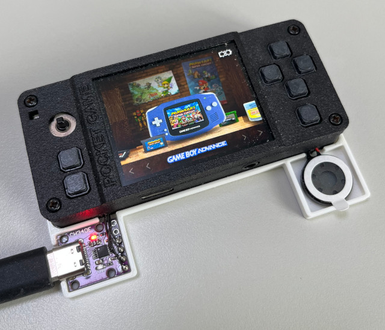
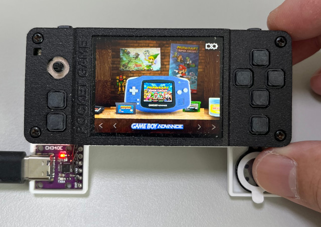

Steward
分享是一種喜悅、更是一種幸福
掌機 - Gaviar (小志掌機) - 移植RetroFE
參考資訊：
https://github.com/FunKey-Project/RetroFE
https://github.com/FunKey-Project/FunKey-OS
$ cd $ git clone https://github.com/FunKey-Project/RetroFE --depth=1 $ git clone https://github.com/FunKey-Project/FunKey-OS --depth=1 -b DrUm78
除了背景，前景圖片不要拉伸
diff --git a/RetroFE/Source/Graphics/PageBuilder.cpp b/RetroFE/Source/Graphics/PageBuilder.cpp
index 17451b5..ad20a97 100755
--- a/RetroFE/Source/Graphics/PageBuilder.cpp
+++ b/RetroFE/Source/Graphics/PageBuilder.cpp
@@ -203,8 +203,8 @@ Page *PageBuilder::buildPage( std::string collectionName )
return NULL;
}
- scaleX_ = (float)screenWidth_ / (float)layoutWidth;
- scaleY_ = (float)screenHeight_ / (float)layoutHeight;
+ scaleX_ = 1;//(float)screenWidth_ / (float)layoutWidth;^M
+ scaleY_ = 1;//(float)screenHeight_ / (float)layoutHeight;^M
std::stringstream ss;
ss << layoutWidth << "x" << layoutHeight << " (scale " << scaleX_ << "x" << scaleY_ << ")";
修改資源路徑
diff --git a/RetroFE/Source/Menu/MenuMode.cpp b/RetroFE/Source/Menu/MenuMode.cpp index 8cce5c7..0a33358 100755 --- a/RetroFE/Source/Menu/MenuMode.cpp +++ b/RetroFE/Source/Menu/MenuMode.cpp @@ -35,15 +35,15 @@ #define MENU_BG_SQURE_WIDTH 180 #define MENU_BG_SQUREE_HEIGHT 140 -#define MENU_FONT_NAME_TITLE "/usr/games/menu_resources/OpenSans-Bold.ttf" +#define MENU_FONT_NAME_TITLE "/boot/RetroFE/menu_resources/OpenSans-Bold.ttf" #define MENU_FONT_SIZE_TITLE 22 -#define MENU_FONT_NAME_INFO "/usr/games/menu_resources/OpenSans-Bold.ttf" +#define MENU_FONT_NAME_INFO "/boot/RetroFE/menu_resources/OpenSans-Bold.ttf" #define MENU_FONT_SIZE_INFO 16 -#define MENU_FONT_NAME_SMALL_INFO "/usr/games/menu_resources/OpenSans-Regular.ttf" +#define MENU_FONT_NAME_SMALL_INFO "/boot/RetroFE/menu_resources/OpenSans-Regular.ttf" #define MENU_FONT_SIZE_SMALL_INFO 13 -#define MENU_PNG_BG_PATH "/usr/games/menu_resources/zone_bg.png" -#define MENU_PNG_ARROW_TOP_PATH "/usr/games/menu_resources/arrow_top.png" -#define MENU_PNG_ARROW_BOTTOM_PATH "/usr/games/menu_resources/arrow_bottom.png" +#define MENU_PNG_BG_PATH "/boot/RetroFE/menu_resources/zone_bg.png" +#define MENU_PNG_ARROW_TOP_PATH "/boot/RetroFE/menu_resources/arrow_top.png" +#define MENU_PNG_ARROW_BOTTOM_PATH "/boot/RetroFE/menu_resources/arrow_bottom.png"
關閉聲音設定
diff --git a/RetroFE/Source/Utility/Utils.h b/RetroFE/Source/Utility/Utils.h index b97612b..8018e3f 100755 --- a/RetroFE/Source/Utility/Utils.h +++ b/RetroFE/Source/Utility/Utils.h @@ -23,8 +23,8 @@ #define SHELL_CMD_ROOTFS_RW "rw" #define SHELL_CMD_ROOTFS_RO "ro" #define SHELL_CMD_PID_RECORD "pid record" -#define SHELL_CMD_AUDIO_AMP_ON "audio_amp on" -#define SHELL_CMD_AUDIO_AMP_OFF "audio_amp off" +#define SHELL_CMD_AUDIO_AMP_ON "" //audio_amp on"^M +#define SHELL_CMD_AUDIO_AMP_OFF "" //audio_amp off"^M #define SHELL_CMD_MAPPING_ROM "keymap rom" #define SHELL_CMD_MAPPING_DEFAULT "keymap default"
編譯
$ cmake \
RetroFE/Source \
-BRetroFE/Build \
-DVERSION_MAJOR=0 \
-DVERSION_MINOR=0 \
-DVERSION_BUILD=0 \
-DCMAKE_TOOLCHAIN_FILE=/opt/gaviar/share/buildroot/toolchainfile.cmake
$ cmake --build RetroFE/Build
$ file RetroFE/Build/retrofe
RetroFE/Build/retrofe: ELF 64-bit LSB pie executable, UCB RISC-V
複製到MicroSD
$ mkdir /xxx/SDCARD/RetroFE $ cp RetroFE/Build/retrofe /xxx/SDCARD/RetroFE $ cp -a ~/FunKey-OS/FunKey/board/funkey/rootfs-overlay/usr/games/* /xxx/SDCARD/RetroFE
修改設定
$ vim /xxx/SDCARD/RetroFE/settings.conf
horizontal = 320
baseItemPath=/boot/roms
開機後執行
$ mount -o remount,rw /boot $ cd /boot/RetroFE $ SDL_NOMOUSE=1 SDL_VIDEODRIVER=fbcon ./retrofe
完成

前景圖片沒有拉伸，看起來就是舒服～
